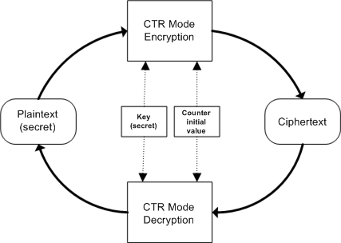
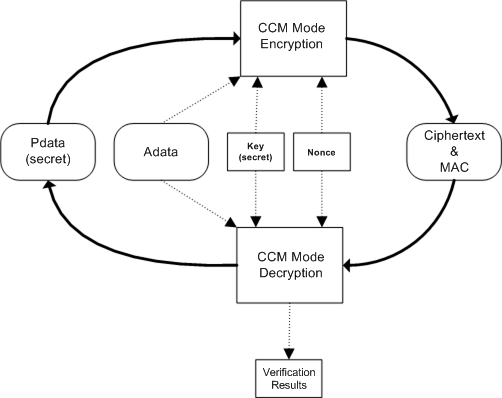

The TWL-SDK AES cipher library provides encryption functions using the AES algorithm. This library supports two cipher modes: (1) CTR mode, which performs simple encryption, and (2) CCM mode, which performs simple encryption and also contains mechanisms for detecting modification of the data.
Here, we explain the terminology used in the documentation related to the TWL-SDK AES cipher library. This terminology explains the usage of these terms within the documentation of the TWL-SDK AES cipher library. Our usage of these terms may differ somewhat from the standard definitions used within the field of cryptography.
| secret | In terms of the cipher, what must not be disclosed to the public. Also covers such information. |
|---|---|
| Encryption | The process of transforming information in a restorable manner to eliminate its apparent meaning. |
| plaintext | The data that will be encrypted. This refers to binary data as well as text data. |
| ciphertext | The result of encrypting plaintext. Like plaintext, in general this refers to binary data as well as text data. |
| decryption | The process of restoring plaintext from ciphertext. |
| block cipher | A cipher algorithm that encrypts plaintext of a fixed length and outputs ciphertext of a fixed length. |
| AES | One type of block cipher algorithm that generates 16 bytes of ciphertext from 16 bytes of plaintext. |
| MAC | The data used to detect modification of data. It stands for Message Authentication Code. |
| Cipher Mode | Term indicating use of an algorithm that encrypts data of an arbitrary length by using a block cipher. |
| CTR Mode | One of the cipher modes. It stands for CounTeR mode. |
| CCM Mode | One of the cipher modes. In addition to the processing performed in CTR mode, this mode also adds a MAC to the ciphertext. This mode stands for Counter with Cipher block chaining Message authentication code. |
| Adata | Part of the input data in CCM mode. It does not get encrypted, but is subject to MAC operations. |
| Pdata | Part of the input data in CCM mode. It gets encrypted and is subject to MAC operations. |
| Key | Data that makes the ciphertexts differ, even when the same plaintext and cipher algorithm are used. It is secret. |
| initial counter value | Data that makes the ciphertexts differ in CTR mode, even if the same key, plaintext, and cipher algorithm are used. It is not secret. A different value must be used each time encryption is performed. |
| nonce | Data that makes the ciphertexts and MACs differ in CCM mode, even if the same key, plaintext, and cipher algorithm are used. It is not secret. A different value must be used each time encryption is performed. |
| Signature | Adding a MAC. |
The following shows the relationship between the data and the two cipher modes that the TWL-SDK AES cipher library supports.
In CTR mode, the plaintext is encrypted and nothing more. Decryption of the ciphertext requires the same key and initial counter value that were used during encryption.
In CCM mode, the Pdata is encrypted and a MAC is generated for the sake of verifying the integrity of the Pdata. In addition to Pdata, the MAC can include information called Adata that is not encrypted but whose integrity must be verified. The Adata can include anything (for example, the data size). Decryption of the ciphertext requires the same key and nonce that were used during encryption. Verification of the ciphertext also requires the same Adata that was used during encryption.
The following shows the approximate performance per byte for encryption and decryption. In addition to this, each encryption or decryption operation requires about 60000 cycles (@134.06 MHz) of overhead.
| Mode | Number of Cycles (@134.06 MHz) | |
|---|---|---|
| CTR Mode | 8.4 cycles/byte | |
| CCM Mode | Adata | 4.9 cycles/byte |
| Pdata | 8.4 cycles/byte | |
Compared with the standard AES library, the TWL-SDK AES cipher library has the following limitations.
CTR mode has a certain property: If you take ciphertext produced in this mode and invert any bit, the corresponding bit of the plaintext obtained by decrypting this ciphertext will also be inverted as compared to the original plaintext.
For example, assume that the plaintext represented by the bit array in the first line below is encrypted, resulting in the ciphertext represented by the bit array in the second line.
plaintext: 000110100001111111001001010100011001000010100111110110010001001
ciphertext: 010000100110111101000111100010110111110001010011001001000011101
We now invert a bit in the ciphertext (for example, the 33rd bit), calling the result ciphertext'.
ciphertext': 010000100110111101000111100010111111110001010011001001000011101
If we decrypt ciphertext' and call the result plaintext', plaintext' will have the 33rd bit inverted compared with the original plaintext.
plaintext': 000110100001111111001001010100010001000010100111110110010001001
There are ways to use this property. If an attacker can guess the plaintext and also possesses some sample ciphertext, the attacker can generate any ciphertext encrypted with the key that was used to encrypt that sample, even without knowing the key. In cases where this property would be problematic, you must use CCM mode. In CCM mode, you can detect the kind of modification described above, because this mode adds a MAC.
2008/09/03 Added a note that the Adata size is not added in CCM mode.
2007/12/25 Initial version.
CONFIDENTIAL